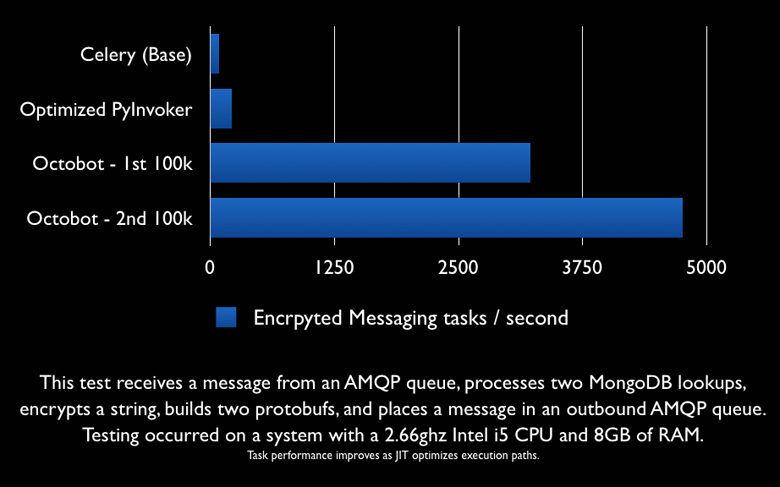
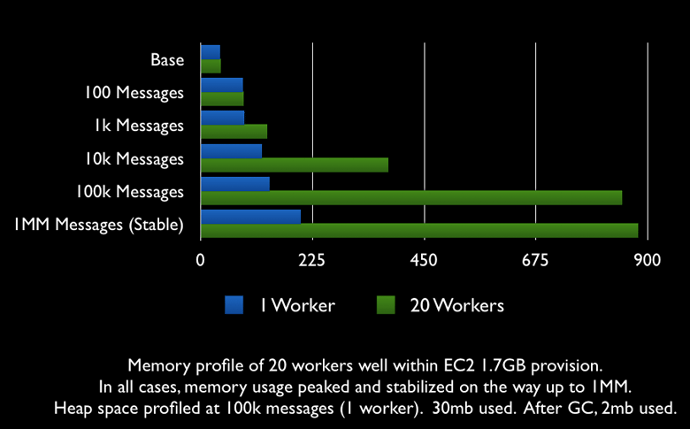
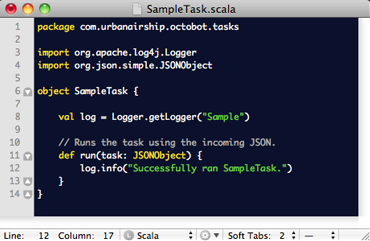
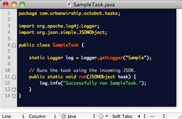
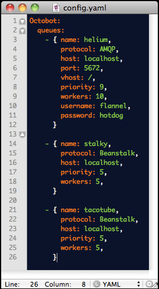

What's it Do?
Octobot is a task queue worker for applications that must process message queues with extremely high throughput, minimal latency, and high availability - especially those sensitive to the overhead implicit in receiving and processing lightweight many lightweight tasks, such as message delivery systems.
It's designed to be a first-class citizen in your infrastructure - providing a reliable queue worker system that can process tasks from any number of queues at varying priorities distributed across multiple datacenters, ensuring that as long as a queue is up and an Octobot instance alive somewhere in the world or deep under the sea, the work will get done.
Features
— Octobot can listen on any number of queues, any number of workers, operating at a configurable priority.
— Supports AMQP/RabbitMQ, Beanstalk, and Redis PubSub. Others easily addable.
— Incoming tasks are just dead-simple JSON.
— Configurable retries, e-mail error notifications.
— Tasks can be written in any JVM language (Scala, Clojure, Java, JRuby, Jython).
— Easy to manage and deploy. Configure with a bit of YML, deploy with a shell / init script.
Get the Source

Get the Docs
Architecture
Octobot is highly parallelizable. The design is stateless, threadsafe, and designed for concurrency and participation in a distributed cluster from the start.
It's also highly pluggable. Octobot provides configurable Startup and Shutdown hooks, providing you with access to any number of internal queues, out-of-task processing threads, outbound message queues, and more.
It also provides a simple "instrumentation" port that returns a bit of JSON containing a series of metrics such as tasks processed per second, total successes and failures, successes and failures per task / per queue. This can easily be integrated into your monitoring infrastructure using a simple plugin for Munin or Nagios.
Task Execution Flow
When Octobot is launched, it reads its YML configuration file, iterates over each of the queues it will listen on, and spawns a thread / queue listener for each worker requested, and sets it to that queue's priority to ensure greater resources for more important queues.
As a worker receives messages, it decodes the JSON and calls TaskExecutor.execute(task, message). The task's run method is called, and it executes.
If there are errors, it's retried according to the JSON "retries" parameter, and a notification e-mail is sent. If not, the worker pulls in the next message and carries on.
Throughput

Memory

SAMPLE TASK:
{"task": "tasks.MakeBurrito", "args": ["pico", "guac", "cilantro"], "retries": 0 }
Scala Example

Java Example

Configuration

Some Handy Stuff
— Tasks can use Octobot's settings loader to configure themselves, providing a simple method of accessing system or cluster settings within a task.
— Sending lots of e-mail? Just drop it on Octobot's outbound e-mail queue, which is also used for sending error notifications. This queue supports SMTP authentication and SSL.
— Octobot invokes tasks using Reflection by default, then caches method lookups after the first time a task is executed. However, if the overhead of reflexive invocation is too great for your application, Octobot's Task Executor class can be easily overridden to provide static call sites for specific tasks.
— Octobot's got a baseline test suite that is growing. It's written using ScalaTest, which provides a familiar syntax for those coming from an RSpec background. Contribute!